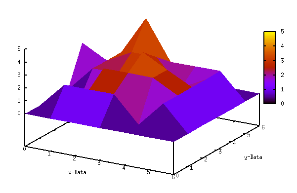

haskell-101
Table of Contents
1 Haskell 101
Haskell is a computer programming language. In particular, it is a polymorphically statically typed, lazy, purely functional language, quite different from most other programming languages. The language is named for Haskell Brooks Curry, whose work in mathematical logic serves as a foundation for functional languages. Haskell is based on lambda calculus, hence the lambda used as a logo.
1.1 Data Representation in Haskell
Data is how we store information and model problems, which makes it integral to any good programming language. Haskell is a functional language that does not incorporate the Object Oriented Paradigm (OOP) most programmers are familiar with coming out of college. However, much of the primitive data types in Haskell maps one-to-one with what you will be familiar with coming from an imperative background.
1.1.1 Primitive Data Types
Int stands for integer. It's used for whole numbers.
Integer stands for, er … also integer. The main difference is that it's not bounded so it can be used to represent really really big numbers. I mean like really big. Int, however, is more efficient.
Float is a real floating point with single precision.
Double is a real floating point with double the precision!
Bool is a boolean type. It can have only two values: True and False.
Char represents a character. It's denoted by single quotes. A list of characters is a string.
1.1.2 Haskell Data Structures
Lists Lists are a very powerful data in Haskell and as such, are one of the most used data structures. Lists are to Haskell what dictionaries are to Python.
In Haskell, lists are a homogenous data structure. It stores several elements of the same type. That means that we can have a list of integers or a list of characters but we can't have a list that has a few integers and then a few characters.
let mynumbers = [1, 2, 3, 4, 5]
[1,2,3,4,5]
Concatenating a list…
[1, 2, 3, 4, 5] ++ [6, 7]
[1,2,3,4,5,6,7]
Prepending a list…
0 : [1, 2, 3, 4, 5]
[0,1,2,3,4,5]
Index a list…
[1, 2, 3, 4, 5] !! 3
4
List ranges provide a concise syntax for creating a list of sequetial values.
[1 .. 6]
[1,2,3,4,5,6]
Here are four basic functions that operate on lists (head, tail, last, init).
head takes a list and returns its head. The head of a list is basically its first element.
head [1, 2, 3, 4, 5, 6]
1
tail takes a list and returns its tail. In other words, it chops off a list's head.
tail [1, 2, 3, 4, 5, 6]
[2,3,4,5,6]
last takes a list and returns its last element.
last [1, 2, 3, 4, 5, 6]
6
init takes a list and returns everything except its last element.
init [1, 2, 3, 4, 5, 6]
[1,2,3,4,5]
Tuples In some ways, tuples are like lists — they are a way to store several values into a single value. However, there are a few fundamental differences. For example, it doesn't matter if a list has only one number in it or an infinite amount of numbers. Tuples, however, are used when you know exactly how many values you want to combine and its type depends on how many components it has and the types of the components.
Another key difference is that they don't have to be homogenous. Unlike a list, a tuple can contain a combination of several types.
let mytuple = ("wow", 5)
(\"wow\",5)
Functions to access the first and second element in a tuple.
fst access the first element in a tuple
fst ("Hello", "World!")
Hello
snd access the second element in a tuple
snd ("Hello", "World!")
World!
A cool function that produces a list of pairs: zip. It takes two lists and then zips them together into one list by joining the matching elements into pairs.
zip [1,2,3,4] ["one", "two", "three", "four"]
[(1,"one"),(2,"two"),(3,"three"),(4,"four")]
Here is an example of the power and elegance of the list data structure in Haskell. In this example you could imagine data coming coming from different locations to populate each list. Then we can simply use functions to transform the data into a form that can be visualized.
show $ transpose [ [0,0,0,0,3,0,0], [0,2,0,2,2,2,0], [0,2,3,2,3,5,0], [0,2,3,4,3,2,0], [0,0,3,3,1,2,0], [0,2,2,2,2,2,0], [0,0,0,0,0,0,0] ]
[[0,0,0,0,0,0,0],[0,2,2,2,0,2,0],[0,0,3,3,3,2,0],[0,2,2,4,3,2,0],[3,2,3,3,1,2,0],[0,2,5,2,2,2,0],[0,0,0,0,0,0,0]]
This transformed list can be fed to gnuplot in order to generate a visualization that makes sense for the data. I just picked it because it looked cool!
| 0 | 0 | 0 | 0 | 0 | 0 | 0 |
| 0 | 2 | 2 | 2 | 0 | 2 | 0 |
| 0 | 0 | 3 | 3 | 3 | 2 | 0 |
| 0 | 2 | 2 | 4 | 3 | 2 | 0 |
| 3 | 2 | 3 | 3 | 1 | 2 | 0 |
| 0 | 2 | 5 | 2 | 2 | 2 | 0 |
| 0 | 0 | 0 | 0 | 0 | 0 | 0 |

Figure 1: GNUPlot rendering of the transformed list data
1.1.3 Defining New Data Types
Haskell has a number of basic built-in types (Bool, Int, Char, Float). As with any language, however, you can make your own user-defined custom types. In haskell, instead of objects, we use Algebraic Data Types.
data Bool = False | True
The part preceeding the "=" denotes the type, which in the above case is Bool. The parts following the "=" are the value constructors.
Using the typical shape example from OOP that we all know and love…
data Shape = Circle Float Float Float | Rectangle Float Float Float Float
In this example the type is Shape and the value constructors are Circle and Rectangle. So we are saying that a Shape can either be a Circle or a Rectangle. In the case of the Circle value constructor, it takes three values, the x and y values that compose the coordinates of the center of the circle, and the radius. In the case of the Rectangle, the first two values are the coordinates of its upper-left corder, and the second two coordinates are lower-right corner.
Here is an example of a function called 'area' that will take a Shape and return its area.
area :: Shape -> Float area (Circle _ _ r) = 3.14 * r ^ 2 area (Rectangle x1 y1 x2 y2) = (abs $ x2 - x1) * (abs $ y2 - y1)
Here are some examples of how to use the 'area' function.
Calling 'area' with a 'Circle' value constructor:
putStrLn $ "Circle Area: " ++ show (area (Circle 10 20 10))
Circle Area: 314.0
Calling 'area' with a 'Rectangle' value constructor:
putStrLn $ "Rectangle Area: " ++ show (area (Rectangle 0 0 100 100))
Rectangle Area: 10000.0
1.1.4 Record Syntax
Record syntax allows us to have the compiler generate function getters for our user defined types. We could certainly use pattern matching to access the specific values in a value constructor or even write getters ourselves. However, this is not desireable as it can be very tedious and syntactically obtuse…we aren't writing Java code for goodness sake!
Consider the following data representing a person in a contact list.
data Person = Person String String Int Float String deriving (Show)
The fields in the Person value constructor are first name, last name, age, height, and phone number repectively. Let's construct a Person.
let contact = Person "Michael" "Bolton" 105 4 "555-345-6784" show contact
Person \"Michael\" \"Bolton\" 105 4.0 \"555-345-6784\"
What if we want to create a function to get seperate info from a person? A function that gets some person's first name, a function that gets some person's last name, etc. Well, we'd have to define them kind of like this.
firstName :: Person -> String firstName (Person firstname _ _ _ _ _) = firstname lastName :: Person -> String lastName (Person _ lastname _ _ _ _) = lastname age :: Person -> Int age (Person _ _ age _ _ _) = age height :: Person -> Float height (Person _ _ _ height _ _) = height phoneNumber :: Person -> String phoneNumber (Person _ _ _ _ number _) = number
That is a lot of work for what amounts to boilerplate code. But it does work. Here they are in action.
firstName contact
lastName contact
age contact
height contact
phoneNumber contact
Michael Bolton 105 4.0 555-345-6784
Enter Record Syntax. All the boilerplate code above an be generated using record syntax, making our code much simpler.
data Car = Car { make :: String, model :: String, color :: String } deriving (Show)
Now we can define our algebraic data types and all of our accessor functions once in a single place.
An added benefit of using record syntax is that we can now use named arguments when constructing a new value.
let newCar = Car {make="Dodge",model="Ram Charger",color="555-645-8907"}
Car {make = \"Dodge\", model = \"Ram Charger\", color = \"555-645-8907\"}
When making a new person, we don't have to necessarily put the fields in the proper order, as long as we list all of them. But if we don't use record syntax, we have to specify them in order.
1.2 Functions in Haskell
Functions are defined as a series of expressions in Haskell. That means that when you define a function, it can look like it has multiple function bodies, but only one will be chosen depending on the arguments passed to the function.
1.2.1 Pattern matching
Pattern matching consists of specifying patterns to which some data should conform and then checking to see if it does and deconstructing the data according to those patterns.
When defining functions, you can define separate function bodies for different patterns. This leads to really neat code that's simple and readable.
lucky :: (Integral a) => a -> String lucky 7 = "LUCKY NUMBER SEVEN!" lucky x = "Sorry, you're out of luck, pal!"
In the example above, you can see that if we call 'lucky' with the number 7, the output will be a string that says "LUCKY NUMBER SEVEN!". Otherwise, the function will print out "Sorry, you're out of luck, pal!". Patterns are matched starting from the top and working their way down.
If the two expressions for the definition of 'lucky' were swapped, the string "LUCKY NUMBER SEVEN!" would never be printed.
1.2.2 Guards
Whereas patterns are a way of making sure a value conforms to some form and deconstructing it, guards are a way of testing whether some property of a value (or several of them) are true or false.
bmiTell :: (RealFloat a) => a -> String bmiTell bmi | bmi <= 18.5 = "You're underweight, you emo, you!" | | bmi <= 25.0 = "You're supposedly normal. Pffft, I bet you're ugly!" | | bmi <= 30.0 = "You're fat! Lose some weight, fatty!" | | otherwise = "You're a whale, congratulations!"
In the above example we are checking the value of the paramer 'bmi' and selecting an appropriate function expression based on the result.
1.2.3 Where clause
Where clauses allow us to assign names to funtions and variables used in the expression of a function body. This can greatly increase readability as well reduce the amount of code we have to write. In addition, it can reduce the number of calculations needed at runtime. Se the example below.
bmiTell :: (RealFloat a) => a -> a -> String bmiTell weight height | bmi <= 18.5 = "You're underweight, you emo, you!" | bmi <= 25.0 = "You're supposedly normal. Pffft, I bet you're ugly!" | bmi <= 30.0 = "You're fat! Lose some weight, fatty!" | otherwise = "You're a whale, congratulations!" where bmi = weight / height ^ 2
The names we define in the where section of a function are only visible to that function, so we don't have to worry about them polluting the namespace of other functions. Notice that all the names are aligned at a single column. If we don't align them nice and proper, Haskell gets confused because then it doesn't know they're all part of the same block.
where bindings aren't shared across function bodies of different patterns. If you want several patterns of one function to access some shared name, you have to define it globally.
1.2.4 Let expressions
Very similar to where bindings are let bindings. Where bindings are a syntactic construct that let you bind to variables at the end of a function and the whole function can see them, including all the guards. Let bindings let you bind to variables anywhere and are expressions themselves, but are very local, so they don't span across guards.
cylinder :: (RealFloat a) => a -> a -> a cylinder r h = let sideArea = 2 * pi * r * h topArea = pi * r ^2 in sideArea + 2 * topArea
1.2.5 Case expressions
case expressions are, well, expressions, much like if else expressions and let bindings. Not only can we evaluate expressions based on the possible cases of the value of a variable, we can also do pattern matching.
describeList :: [a] -> String describeList xs = "The list is " ++ case xs of [] -> "empty." [x] -> "a singleton list." xs -> "a longer list."